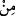

Ya yiyeceği sadece bu olan ve başka yemeği bulunmayanın hâli nicedir.”[216]
Galy ve galeyân hareket ve yükselmedir; coşup taşmaktır. Müfredât kitabında şöyle
denilmiştir: Galy ve galeyân tencerenin kaynayıp taşmasıdır. Âyetteki ifâde bundan
mecâz olarak alınmıştır. Öfke ve harbin galeyanı da buna benzetilmiştir. Âyette şöyle bir
işâret de vardır: Günahkâr hevâ putuna tapan, hırs ağacını dikip dünyâda sadece nefsin
zevk duyacağı nefsânî şehvetlerin lezzetlerini meyve olarak devşirenlerin âhiretteki
yemeği, vasıfları burada anlatılan zakkum olur.
Dünyânın nîmet ve istekleriyle kötü huy kazandırma nefse
Tembelleştirir hizmetkârları ekmek, su ve karın tokluğu
47. (Allah, zebânîlere emreder): ”Tutun onu, cehennemin ortasına sürükleyin.”
Kıyâmette zebânîlere o günahkâr kâfiri “tutun” denilir. Onlar da onu perçemlerinden
ve ayaklarından tutarlar. “Sürükleyin” sertlikle ve zor kullanarak çekin. “
/elbisenin
yaka ve uçlarından tutup sertçe ve zor kullanarak çekmektir.” Tâcü’l-mesâdir’de şöyle
denilmiştir: “
/taşımak, götürmek” demektir.
Kàmûs’ta: “
” zorla çekip sürükleyip götürdü, demektir. Mi‘tel kelimesi minber
vezninde olup kuvvetli ve muktedir olmaktır. Öyle ki cehennemin her tarafından aynı
mesâfede olacak merkeze sürükleyin, demektir.
48. “Sonra başının üstüne kaynar su azâbından dökün!”
suyu yukarıdan dökmek ve akıtmaktır. Azâb ise akıcı olmadığı için dökülen bir
şey değildir. Sanki onların başlarının üstünden kaynar su dökülür, denilmiş olmaktadır.
Mübâlağa için doğrudan “kaynar su dökülür” denilmeyip, onların başlarının üstünden
azap döküldüğü beyân edilmiştir ki, o da kaynar sudur. Tahfif için azâb “
/hamîm”
kelimesine muzâf kılınmıştır. Dökülen azâbın azâb çeşitlerinden bir kısmını ifâde etmesi
bakımından da “ /min” kelimesi ziyâde edilmiştir. Sonra bütün bedenin dışını
kaplayacak şekilde başından aşağı doğru kendisine azâb olarak kaynar suyu dökünüz.
Zaten onun içine de zakkum azâb vermektedir.
Rivâyet edildiğine göre kâfir cehenneme girince ona zakkum yedirilir. Sonra
cehennemde görevli olan melek Hâzin, kâfirin başına balyozla vurur. Kâfirin beyni
bedenine akar. Sonra başından aşağı kaynar su dökülür. Bu kaynar su, kâfirin karnına